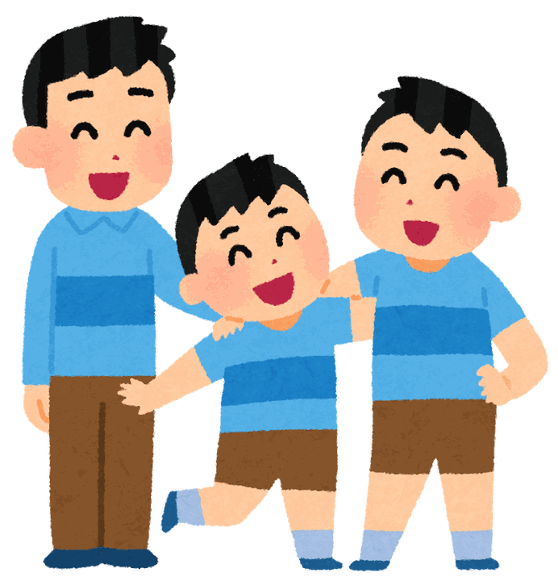

Padrão
Do hiragana e katakana até o nível intermediário e avançado, com materiais didáticos originais. Alcança o N5 e o N4 do JLPT ao longo das apostilas A a D.
O PORPONÊS é um curso de língua japonesa online, com professora nativa. Do hiragana ao JLPT, de uma viagem ao Japão a um intercâmbio: aqui você aprende o idioma e a cultura, no seu ritmo.
Sobre o PORPONÊS ポルポネス
O PORPONÊS é um curso de língua japonesa online administrado pela Maki, professora nativa. As aulas partem do básico (as letras hiragana e katakana) e avançam por materiais didáticos originais até os níveis intermediário e avançado.
Mais do que gramática e vocabulário, as aulas trazem a cultura japonesa para perto: você tira dúvidas a qualquer momento, por menores que sejam, e aprende de forma leve e divertida.
Cursos コース
Quer ler mangá no original, viajar com autonomia ou passar no JLPT? Escolha o caminho que combina com você.
Do hiragana e katakana até o nível intermediário e avançado, com materiais didáticos originais. Alcança o N5 e o N4 do JLPT ao longo das apostilas A a D.
Expressões essenciais para a viagem, cultura japonesa e pontos turísticos, sem precisar aprender a escrita. 16 aulas em cerca de 3 meses.
Para crianças de 5 a 12 anos: números, animais, objetos e expressões, aprendidos com jogos e músicas, no ritmo de cada criança.
Nos 3 meses antes da prova do Teste de Proficiência em Língua Japonesa, realizada duas vezes por ano.
Prática só em japonês com professora nativa. Para quem já estudou e quer falar, ou testar o próprio nível.
Expressões da conversa cotidiana, formais e informais, sem aprender a escrita. Apenas 8 aulas.
Como funciona レッスンについて
Descontos 割引
Condições especiais para irmãos e para quem traz novos alunos ao PORPONÊS.

Depoimentos 生徒の声

Tire suas dúvidas sobre cursos, horários e valores direto com a professora. Sem compromisso.